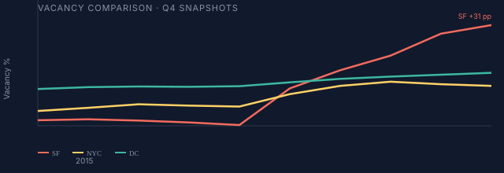

01 — The numbers
Original research — progress in real estate
Who wins and loses when office values crash?
National "office crisis" headlines hide a San Francisco crisis — and a Manhattan split.
Vacancy roughly tripled in five years and hundreds of billions in office value were repriced — but the shock looks very different in San Francisco, New York, and Washington, D.C. This project asks what kind of progress hides inside that repricing: who gains option value when offices are forced to evolve.
About this project
Context
U.S. office vacancy is at multi-decade highs; Moody's projects a peak around 24% in 2026. Tech-heavy downtowns and large monocentric markets absorb very different hits — with knock-on effects on tax bases, foot traffic, and lender balance sheets.
Literature
Lease-level work by Gupta, Mittal, and Van Nieuwerburgh (NYC ~46% long-run decline), Moody's vacancy forecasts, Cushman & Wakefield and Colliers market reports, the NYC Comptroller's doom-loop framing, and J.P. Morgan on bank CRE exposure.
Research question
When office values reprice after a demand shock, who wins and who loses — across cities, asset classes, and investor types — and what does the SF / NYC / D.C. gap reveal about how distributed the pain is?
Why this is progress
Forced repricing reallocates capital, space, and people from saturated office use to higher-value ones — conversions, lab buildouts, mixed-use downtowns, and a cheaper basis for adaptive reuse.
What this project adds
- A harmonized three-city panel (SF, Manhattan, D.C.) hand-curated from primary brokerage and government PDFs — 2015–2024 Q4.
- Sublease tracked as a leading indicator: it spiked before direct vacancy in all three markets.
- FRED national series paired with city pain: banks expanded CRE exposure (+29.5%) while vacancy exploded.
Progress lens
Engine: When a land use saturates, repricing forces capital toward adaptive reuse — office-to-residential conversions, lab buildouts, mixed-use downtowns.
Bottleneck: Zoning, conversion economics, and municipal dependence on office property-tax assessments slow the transition.
Inequality: Patient capital and trophy landlords gain option value; downtown workers in office-adjacent services and small businesses bear the employment and fiscal cost first.
Future: Whether a city enters a doom loop or boom loop depends on policy (conversions, tax reform) and whether distressed basis clears fast enough for new uses to take hold.
The stakes: hundreds of billions repriced — but not evenly. Who captures the upside?
19.6%
U.S. office vacancy (Q1 2025)
24%
Moody's peak vacancy scenario
$556.8B
Illustrative nationwide office value destruction (literature)
22.65%
SF vacancy context (major-city stat pack)


{kind=link}
Lease-level study estimates a 46% long-run decline in NYC office values.
02 — The cities (interactive)
Why these three cities?
Same national shock, three adjustment paths — tech demand collapse, scale + flight-to-quality, and government-adjacent fiscal exposure.
San Francisco
Tech/WFH shock and extreme vacancy — conversion and repricing dominate.
Manhattan
Scale plus flight-to-quality — trophy Class A holds while older stock absorbs vacancy.
Washington, D.C.
Government-adjacent demand with rising vacant stock — fiscal and property-tax exposure.

{kind=link}
Compare cities — real data
Real annual Q4 values from brokerage and government reports (2015–2024). Hand-curated from primary sources — not a single vendor API.
Try this
- Start with Compare all on Vacancy — watch the SF line diverge from NYC and D.C.
- Switch to Rent — Manhattan trophy rents rise while SF falls.
- Pick one city to focus on sublease as an early distress signal.
Vacancy rate
Live chart loads here.
Compare all: SF vacancy 5.2% → 36.6% (2019–2024); DC +4.2 pp over the same span.
Class A asking rent
Live chart loads here.
Compare all: Manhattan $83 → $86/sf; SF $80 → $70/sf — a K-shaped split.
Sublease available
Live chart loads here.
Compare all: sublease spiked in all three cities — an early distress signal.
Sources: Colliers SF; Cushman & Wakefield / NYC Comptroller; D.C. ORA / JLL. Brokerage figures vary ~1–3 pp across vendors.
Findings from the real city panel
National "office crisis" headlines hide a San Francisco crisis — and a Manhattan split. Four patterns from the dashboard above. City deltas compare Q4 2019 to Q4 2024.
-
01 · real data
The "office shock" is really a San Francisco shock.
Vacancy jumps: SF +31.4 pp, Manhattan +6.5 pp, DC +4.2 pp. SF's shock is roughly seven times DC's.
-
02 · real data
Trophy-class rents diverge from vacancy.
Class A asking rents: SF $80 → $70, Manhattan $83 → $86, DC flat. Flight-to-quality concentrated demand at the top.
-
03 · real data
Sublease is the leading indicator.
Sublease peaked SF +5×, Manhattan ~2×, DC ~2× — before direct vacancy, now slowly bleeding back.
-
04 · real data
Banks absorb the shock — so far.
CRE loans grew $2.32T → $3.01T (+29.5%). Delinquencies 0.67% → 1.56% — real repricing, contained credit event so far.
Methodology. City series are hand-curated annual Q4 values from primary PDFs — a deliberate choice to harmonize three cities on one comparable panel rather than rely on a single vendor feed. National series from FRED. Figures are directional; see Limits & counterpoints on Page 3.
Key terms (CRE glossary)
- CRE
- Commercial real estate — office, retail, and industrial property.
- Class A / trophy
- Newest, highest-quality buildings; trophy = top-tier Class A in prime locations.
- Asking rent
- Listed rent before concessions — not net effective rent.
- Sublease
- Tenant re-letting space they no longer need — an early distress signal.
- Flight to quality
- Tenants downsizing into better buildings, leaving older stock empty.
- K-shaped
- Top-tier assets recover while lower-tier assets stay distressed.
Case study: San Francisco
Vacancy at 36.6% (Q4 2024), up from 5.2% end-2019. Sublease peaked near 9 M sq ft. Class A rents ~$80 → ~$70/sf.
Losers here
- Downtown workers and retailers tied to office foot traffic
- Municipal tax base as assessed values weaken
- Class B/C landlords forced to cut rents
Winners (potential)
- Conversion developers at distressed basis
- Distressed-asset funds with patience
Case study: Manhattan
Vacancy ~17–18% in 2024 as trophy Class A recovered. Class A rents rose ($83 → $86/sf) — a K-shaped split.
Losers here
- Class B/C owners and older fringe stock
- Transit-adjacent small businesses
Winners here
- Trophy landlords who raised headline rents
- Buyers of discounted fringe assets
Case study: Washington, D.C.
Vacancy 17.4% → 21.6% (2019–2024) — a slower burn than SF, but the D.C. ORA flags vacant stock as an "Achilles' heel" for the property-tax base.
Losers here
- City fiscal capacity if assessments and transactions weaken
- Owners of older federal-adjacent Class B stock
- Downtown workers when federal return-to-office stays partial
Winners here
- Institutional buyers of discounted assets near transit
- Conversion or mixed-use developers where zoning allows
Real data — FRED
National CRE indicators
City pain is real (see dashboard above). Here: the banking system kept expanding CRE exposure while delinquencies stayed low — repricing in markets, containment in credit so far.
CRE loan delinquency rate
These patterns do not affect everyone equally. Page 3 translates the data into who gains option value — and who bears the fiscal and employment cost. Jump to Winners & Losers →
03 — Takeaways
Mini case study: SF office-to-residential conversion
When a tech tenant vacates a 1960s tower at a distressed basis, the owner faces a choice: hold for negative cash flow or sell to a conversion specialist. Projects like 550 California Street show how a discounted office sale can become housing — stabilizing the tax base while adding supply. Progress for future residents; pain for the seller forced to exit.
Source: SPUR — SF office recovery report
Who wins and who loses
Winners
- Institutional investors and well-capitalized buyers acquiring distressed or discounted assets
- Owners of Class A / trophy buildings in prime locations (relative resilience)
- Asset managers with long horizons who can wait out lease rollover and repricing
Losers
- Urban workers in office-adjacent services (food, retail, cleaning, security) when attendance and hiring slow
- Small businesses in downtown corridors tied to office foot traffic
- Municipal budgets when assessed values and transaction volume weaken
Capital that can buy at a discount and hold — or restructure — captures option value when others are forced to sell or refinance.
What comes next
- Office-to-residential conversion (where economically and legally feasible)
- A wall of CRE debt maturities and refinancing under higher rates
- Fiscal feedback loops: weaker downtowns → fewer services → harder recovery
National "office crisis" headlines hide a San Francisco crisis — and a Manhattan split. The winners are those with capital and patience; the losers are workers, small businesses, and cities tied to the old office equilibrium.
Limits & counterpoints
- Hand-curated brokerage series vary by vendor (~1–3 pp); comparisons are directional, not precise.
- Class A asking rent ≠ net effective rent — concessions are often hidden off-lease.
- Bank delinquency rates may understate distress if lenders extend or forbear on maturing loans.
- SF conversion wins are potential, not realized at scale — rezoning and economics still bind many towers.
- Counterpoint: lower office rents could eventually help some tenants — but fiscal drag and job losses in office-adjacent services hit workers and cities first.
Sources
- Gupta, Mittal & Van Nieuwerburgh — Work From Home and the Office Real Estate Apocalypse (NBER)
- Kaplan Group — 52 Commercial & Office Real Estate Statistics for 2025
- CFO Dive / Moody's — office vacancy peak scenario
- NYC Comptroller — Doom Loop or Boom Loop?
- SPUR — San Francisco commercial office recovery
- D.C. ORA — Vacant office space and tax-base risk
- Colliers — San Francisco office market research